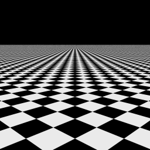
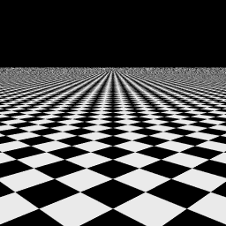
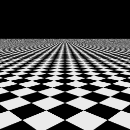
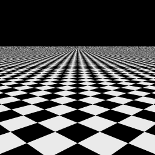
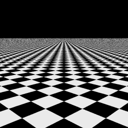
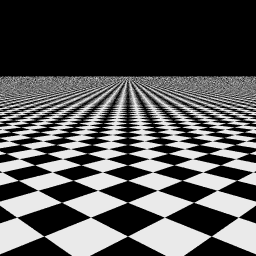
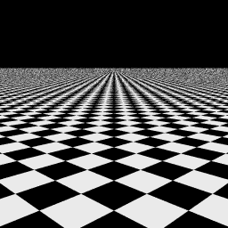
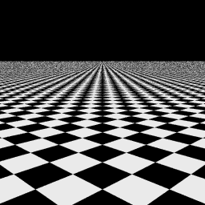
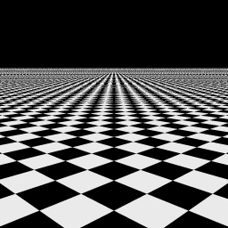
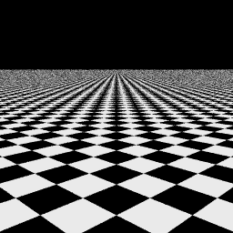

|  |  |
| "Correct" image. No error |
Hammersley points with p1 = 2. Mean(|E|)=0.0101, S.D.(|E|)=0.0264 R.M.S.(E)=0.0282, Max.(|E|)=0.3882 |
|  |  |
| multi-jittered sampling, n=4, N=16. Mean(|E|)=0.0103, S.D.(|E|)=0.0270 R.M.S.(E)=0.0289, Max.(|E|)=0.3686 |
Hammersley points with p1 = 3. Mean(|E|)=0.0106, S.D.(|E|)=0.0274 R.M.S.(E)=0.0294, Max.(|E|)=0.4431 |
|  |  |
| Halton points with p1 = 2, p2 = 3. Mean(|E|)=0.0114, S.D.(|E|)=0.0287 R.M.S.(E)=0.0309, Max.(|E|)=0.3882 |
Halton points with p1 = 2, p2 = 7. Mean(|E|)=0.0131, S.D.(|E|)=0.0289 R.M.S.(E)=0.0310, Max.(|E|)=0.4118 |
|  |  |
| jittered sampling, 4x4. Mean(|E|)=0.0131, S.D.(|E|)=0.0332 R.M.S.(E)=0.0357, Max.(|E|)=0.3765 |
Poisson disk, d = 0.2. Mean(|E|)=0.0133, S.D.(|E|)=0.0332 R.M.S.(E)=0.0358, Max.(|E|)=0.4118 |
 |  |
| regular sampling. Mean(|E|)=0.0138, S.D.(|E|)=0.0393 R.M.S.(E)=0.0416, Max.(|E|)=0.5059 |
random sampling. Mean(|E|)=0.0185, S.D.(|E|)=0.0446 R.M.S.(E)=0.0483, Max.(|E|)=0.4000 |